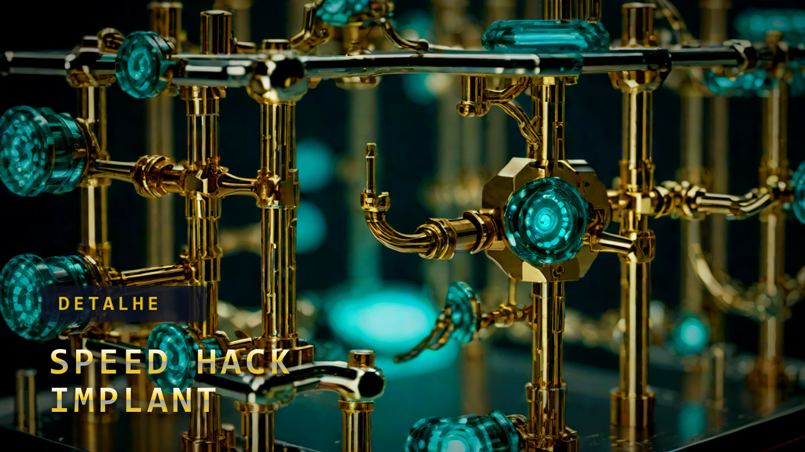
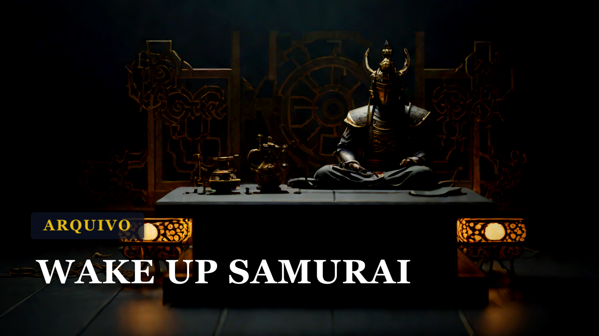

Gerado em 15/11/2026, 14:18:06 | Pipeline: VisualContentGate + CLIP ViT-B/32 + Quality Metrics
| Tema | Conceito | Preview | Veredito | Visual Gate | Semântica (CLIP) | Quality Gate |
|---|---|---|---|---|---|---|
| Cyberpunk 2077 Concept A |
Cyberpunk 2077: Sandevistan Neural Spine |  |
REJECTED 1872 KB |
Visual Gate: ✅ PASSED
Asset aprovado: complexidade=49.9, diversidade cromática OK, sujeito reconhecível.
|
CLIP Score: 73% ❌
Margin: 0.098CLIP multimodal confirmou aderência ao tema "cyberware" (similaridade calibrada 73.4% vs 63.6% distrator). |
Quality: 99/100 ✅
Complexity: 100/100 (stdev=49.9)Legibility@224px: 100/100 (mean=41.3) Composition: 98/100 (edgeAvg=54.5) Dimensions: 1280×720 |
| Cyberpunk 2077 Concept B |
Cyberpunk 2077: Johnny Silverhand Returns |  |
REJECTED 768 KB |
Visual Gate: ✅ PASSED
Asset aprovado: complexidade=39.3, diversidade cromática OK, sujeito reconhecível.
|
CLIP Score: 69% ✅
Margin: 0.174CLIP multimodal confirmou aderência ao tema "game thumbnail" (similaridade calibrada 69.2% vs 51.8% distrator). |
Quality: 53/100 ❌
Complexity: 98/100 (stdev=39.3)Legibility@224px: 30/100 (mean=17.3) Composition: 28/100 (edgeAvg=15.4) Dimensions: 1280×720 ⛔ Below threshold (overall=53, minStdev=18) |